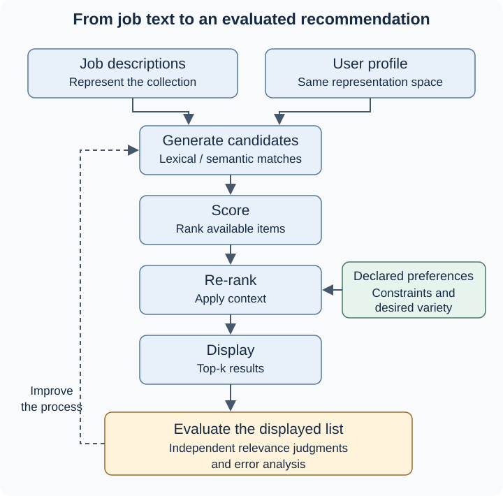

8.1 Recommendation Systems and Personalized Text Ranking#
Week 03 represented text as vectors. Week 04 compared those vectors and retrieved nearby texts. Now we add a person with preferences:
Which items should we recommend to this user, and what evidence would show that the recommendations are useful?
We will follow a fictional candidate, Alex, who knows Python and SQL and wants an early-career reporting role. Job descriptions are our items. All snippets, feature weights, and relevance labels below are teaching examples, not live vacancies or measured model performance. This is an opportunity-discovery exercise, not a system for ranking people or making hiring decisions.
By the end, you should be able to compare recommendation approaches, explain text-based ranking, interpret BM25 and embedding matches, calculate Precision@5, and identify missing context or misleading results.
1. Why recommendation systems matter#
A job description may mention every skill in Alex’s profile and still be a poor recommendation: it might require ten years of management experience. Textual resemblance is useful evidence, but relevance depends on what Alex wants to do.
Related tasks use different information:
Task |
Question in our example |
|---|---|
Search |
What does Alex request now, such as “junior SQL analyst”? |
Retrieval |
Which descriptions should enter the result set? |
Ranking |
In what order should those descriptions appear? |
Recommendation |
Which opportunities should we suggest, using the available evidence about Alex’s interests? |
Personalization |
How should Alex’s preferences change the suggestions? |
Search and recommendation overlap. A query can express preferences; a recommendation can help someone discover items they did not explicitly request. Google distinguishes suggestions based on user interests from suggestions related to a currently viewed item [GooglefDevelopersc]. The same distinction applies to learning resources, research articles, and movies.
In Week 05, a classifier assigned a category to each input. Ranking instead orders candidates relative to one another. A job can rank first in a poor collection even when none of the available jobs is useful.
Important
A top-ranked item is the best match under the chosen method among the available candidates. That statement does not establish relevance, qualifications, or a probability of success.
2. Types of recommendation systems#
Consider four ways to choose jobs for Alex. Each requires different evidence.
Approach |
Data needed |
Example and useful starting point |
Main limitation |
|---|---|---|---|
Popularity-based |
Aggregate views, saves, or another declared global measure |
Show frequently saved vacancies; a simple baseline when profile information is missing |
Broad attention can obscure individual needs |
Content-based |
Item features and a user’s preferences or liked-item features |
Match Alex’s Python/SQL profile to job text |
Can miss interests not expressed in the features |
Collaborative |
Interaction histories across users and items |
Suggest jobs saved by people with similar interaction patterns |
New users/items have little interaction evidence |
Hybrid |
More than one signal or recommendation method |
Combine text matches with interaction-derived candidates |
More signals require more careful comparison and evaluation |
Content-based filtering uses an item’s properties to match a user’s interests. Those interests can be stated directly or inferred from behavior [GooglefDevelopersb]. Recommending movies similar to one Alex liked is item-to-item matching; comparing Alex’s profile to jobs is profile-to-item matching. Both can be content-based.
Collaborative filtering uses relationships in other users’ interaction data, rather than only textual descriptions. A tiny example makes the intuition visible [GooglefDevelopersa]:
User |
Reporting job A |
Reporting job B |
NLP job C |
NLP job D |
|---|---|---|---|---|
Alex |
Saved |
? |
? |
? |
Blair |
Saved |
Saved |
? |
? |
Casey |
? |
? |
Saved |
Saved |
Alex and Blair share a save, so Blair’s interest in B might nominate B for Alex. This is a reason to investigate, not proof Alex will like it. The question marks mean unobserved, not disliked. We do not need matrix-factorization mathematics to understand this pattern.
Explicit feedback states a preference: “I want reporting roles,” a rating, or a declared skill interest. Implicit feedback records behavior: a view, click, or save. A click may reflect curiosity rather than a favorable judgment. The meaning of each signal must be specified before using it [GooglefDevelopersa].
3. Building text-based recommendations#
Our baseline compares Alex’s profile to each job description. Recall that TF-IDF assigns term weights using within-document frequency and collection rarity. Descriptions and profile text must use the same vocabulary and weighting scheme to be compared [MRS08]. In a baseline workflow, fit the representation on the job collection and transform profile text into that space.
Preprocessing affects what evidence survives. Removing punctuation may damage a skill such as C++; removing negation may change “no management experience required.” Keep the representation choices connected to the task, rather than applying a cleaning recipe automatically.
For nonzero vectors, cosine similarity is:
It compares direction. Compute one score for each job, sort descending, and return the top-k, the first k jobs. This is the query-as-vector ranking idea from information retrieval, with a profile supplying the input [MRS08].
A worked ranking example#
To make every calculation visible, use just four features: Python, SQL, NLP, equipment maintenance, in that order. Alex’s vector is (1, 1, 0, 0). The following deliberately simplified weights are assigned for illustration; they are not TF-IDF estimates. They leave out seniority and many other important details.
ID |
Fictional role and description |
Feature vector |
|---|---|---|
J1 |
Junior data analyst: Python and SQL reporting; early-career applicants welcome |
|
J2 |
Analytics director: Python and SQL strategy; extensive team-management experience required |
|
J3 |
Research data assistant: Python and SQL reporting on language data; NLP training provided |
|
J4 |
SQL reporting analyst: database reports and basic text tagging; early-career role |
|
J5 |
Senior NLP engineer: Python language models; production modeling experience required |
|
J6 |
Equipment technician: machinery inspection and maintenance |
|
For J3, the dot product is 1×1 + 1×1 = 2. Alex’s length is \(\sqrt{2}\) and J3’s length is \(\sqrt{3}\). Therefore:
Repeating this calculation produces the complete ranking:
Rank |
Job |
Cosine calculation |
Score, rounded |
|---|---|---|---|
1 |
J1 |
\(2/(\sqrt{2}\sqrt{2})\) |
1.000 |
2 |
J2 |
\(3/(\sqrt{2}\sqrt{5})\) |
0.949 |
3 |
J3 |
\(2/(\sqrt{2}\sqrt{3})\) |
0.816 |
4 |
J4 |
\(1/(\sqrt{2}\sqrt{2})\) |
0.500 |
5 |
J5 |
\(1/(\sqrt{2}\sqrt{5})\) |
0.316 |
6 |
J6 |
\(0/(\sqrt{2}\times1)\) |
0.000 |
With k = 5, display J1, J2, J3, J4, and J5. J2 ranks highly because its vector points close to Alex’s, even though the description’s management requirement conflicts with Alex’s goal. Section 6 will evaluate this exact list.
Note
Matching text is not matching every requirement. Our four features cannot represent a constraint they never encoded. A more detailed vector does not automatically solve that problem either.
Nearest neighbors and score direction#
Nearest-neighbor retrieval finds close items in the representation space. It is not automatically collaborative filtering, and it is different from a KNN classifier that predicts a label from neighbors’ labels. With cosine distance = 1 − cosine similarity, smaller distances correspond to larger similarities. Other distances can produce different orders; name the metric rather than treating any returned number as a generic score. Google’s candidate-generation explanation discusses this distinction.
An empty profile or one containing no known vocabulary may produce a zero vector. Cosine’s formula is then undefined. Treat that as missing representation evidence and use a declared fallback or ask for preferences, rather than suggesting that an arbitrary tie is a meaningful match.
4. Lexical vs. semantic ranking#
The representation and scoring rule can both change results:
Method |
Main matching evidence |
What to inspect |
|---|---|---|
TF-IDF + cosine |
Shared terms weighted by collection rarity; vector direction |
Important shared skills and vocabulary mismatches |
BM25 |
Query-term matches weighted with frequency saturation and document-length normalization |
Repeated terms, rare terms, and description length |
Sentence embeddings + cosine |
Closeness in a model’s learned text space |
Paraphrases, domain meaning, and misleading semantic associations |
BM25: repeated matches and description length#
Okapi BM25 is a lexical query-to-document ranking function. Two descriptions that mention SQL once need not receive the same score: that mention may be more concentrated in a short description. Conversely, repeating SQL many times should not increase its contribution without limit [MRS08].
Two controls govern these effects: k1 controls term-frequency saturation, and b controls length normalization. Setting b = 0 removes the length adjustment; increasing it strengthens that adjustment. A larger k1 makes repeated matches saturate more slowly. Elasticsearch documents defaults of k1 = 1.2 and b = 0.75; these are implementation defaults, not universally optimal choices [Con18, Elastic].
Here is a controlled illustration for the single query term SQL. Hold its rarity weight, IDF, at 1, fix the collection’s average description length at 100 tokens, and use those parameter values. Only the term’s count or description length changes:
SQL occurrences |
Description length |
SQL’s BM25 contribution |
|---|---|---|
1 |
100 |
1.000 |
2 |
100 |
1.375 |
3 |
100 |
1.571 |
1 |
50 |
1.257 |
1 |
200 |
0.710 |
At average length, the two-occurrence calculation is (2 × 2.2) / (2 + 1.2) = 1.375. Going from one to two occurrences adds 0.375; adding a third adds about 0.196. That diminishing gain is saturation. Holding count at one, the short description contributes more than the long description. This illustrates one term’s contribution, not a complete multi-term recommendation score.
The average length and rarity weight stay fixed for these comparisons. They are hypothetical variations against the same background collection, not a five-document corpus whose statistics should be recomputed. The numerical mechanism follows the BM25 term-frequency/length factor described by Stanford and Elastic; the examples are original [Con18, MRS08].
Optional mathematics: one disclosed BM25 variant
One common form, using Lucene-style positive IDF, is written below in two steps. First define the length adjustment \(a_d\):
Here the sum runs over distinct query terms, \(f(t,d)\) is the term count, \(|d|\) is the document’s token length, avgDL is average token length, N is the number of documents, and \(n_t\) counts documents containing the term. The table above sets IDF to 1 to isolate the remaining factor.
BM25 variants differ, particularly in IDF and query-term handling. Older log-odds IDF forms can be negative for common terms. State which variant you use before comparing numerical outputs. You do not need to derive this formula or calculate IDF by hand for the core lesson.
Semantic matching and vocabulary mismatch#
Suppose Alex searches for NLP in another session, while a description says “language understanding.” Literal term matching can miss that connection. Sentence embeddings represent texts in a learned space where related wording may be close; semantic search compares an input embedding with corpus embeddings [SentenceTransformersa].
The query and descriptions need compatible encodings. Short-query/long-description retrieval can differ from comparing two similarly sized sentences, so choose a model suited to the task. Semantic relatedness remains a hypothesis to evaluate: “language understanding” might describe a senior research role rather than Alex’s desired reporting work.
Important
BM25 and cosine scores have different meanings and scales. Neither is a calibrated relevance probability. Dense-vector cosine can be negative; it is not limited to the nonnegative range of ordinary TF-IDF vectors.
Sentence Transformers documents similarity functions and examples of negative cosine values [SentenceTransformersb]. Compare methods using relevance judgments and returned IDs, rather than asking which model produced the largest raw number.
5. Personalization and user preferences#
Alex’s profile expresses current skills and an early-career reporting goal. A second fictional user, Morgan, has Python/NLP experience and wants a senior language-modeling role. J5’s description may be worth showing to Morgan, while J1 may be less useful. The collection has not changed; the person and evaluation context have.
Preference or context |
Alex |
Morgan |
|---|---|---|
Skills emphasized |
Python, SQL |
Python, NLP |
Work sought |
Reporting |
Language modeling |
Level sought |
Early career |
Senior technical role |
Shared evidence |
The same six descriptions |
The same six descriptions |
An explicit text profile offers a starting point without interaction history. Persistent personalization could retain declared interests and update them from later feedback. A single search phrase expresses a one-time need; storing a preference model across sessions introduces additional context and responsibilities [GooglefDevelopersb].
Separate soft preferences, which can influence scores, from hard constraints, which remove unacceptable candidates. If Alex explicitly excludes management roles, remove J2. If Alex excludes senior roles, also remove J5. The remaining list is J1, J3, J4, J6 in the original relative order. J6 is still irrelevant despite surviving those constraints. Filtering cannot create useful jobs missing from the collection.
Note
Do not fill every display slot at any cost. State when too few useful or eligible candidates remain. A preference filter and a relevance judgment answer different questions.
This is where candidate generation, scoring, and re-ranking become helpful distinctions. First gather possible jobs, then score them, then apply declared preferences or other list-level adjustments. A preference may also shape candidate generation earlier. Google’s overview presents these as a common architecture, not a requirement to use three separate models [GooglefDevelopersc].
6. Evaluating recommendation quality#
Before looking at a ranking, define relevance for a specific profile. Our rule is: a job is worth showing to Alex if its described tasks fit the reporting goal and its stated experience expectations do not conflict with the early-career preference. A description lacking a key requirement should prompt uncertainty rather than invented facts.
For this exercise, use the following independent teaching judgments. The label is not obtained by thresholding cosine similarity.
Returned rank |
Job |
Relevant to Alex? |
Reason |
|---|---|---|---|
1 |
J1 |
1 |
Early-career Python/SQL reporting |
2 |
J2 |
0 |
Requires extensive management experience |
3 |
J3 |
1 |
Reporting work with NLP training provided |
4 |
J4 |
1 |
Early-career SQL reporting |
5 |
J5 |
0 |
Senior language-modeling role |
Precision@K is the number of relevant items among the first K recommendations divided by K [MRS08, RecommendersTeam]:
Three of Alex’s five displayed jobs satisfy our rubric. The score says nothing about the chance of an offer.
Comparing two lists#
Imagine a second illustrative ordering, J1, J3, J2, J5, J6. Its flags are [1, 1, 0, 0, 0], giving Precision@5 = 2/5 = 0.40. It puts useful jobs earlier but misses J4. These are two teaching lists, not claimed BM25-versus-embedding results.
Precision@5 only counts the relevant items inside the cutoff. Swapping J1 and J2 in the first list would leave it at 0.60. To compare ordering within the displayed set or graded relevance, additional measures such as NDCG can help; their calculation is beyond this week’s core scope [MRS08].
Recall@K asks how many of all relevant jobs were recovered. If the fully judged collection has exactly three relevant jobs for Alex, the first list’s Recall@5 is 3/3 = 1.00, despite its imperfect precision. The second list has Recall@5 2/3 ≈ 0.67. Recall’s denominator therefore needs judgments beyond the returned list. Unknown relevance must not silently become “irrelevant.”
Reading the errors and the metric’s limits#
J2 reveals a missing seniority constraint. J5 shares a skill but serves a different work goal. These errors suggest inspecting context, not just changing a similarity threshold. Human judges may disagree on borderline descriptions; document the rubric and rationales.
For a fair method comparison, keep the profile, corpus, K, and judgments fixed; use unique item IDs and a stated tie rule. Under the Recommenders Precision@K convention, fewer than K returned items still use denominator K. Report the returned count too [RecommendersTeam]. If no jobs are relevant, recall is undefined; specify how such profiles are reported. Avoid tuning on judgments and then calling those same judgments an independent test.
A cold-start user has little history; a new job has few interactions. Content can supply evidence, but cannot reveal preferences never provided. Interaction-only systems have particular difficulty with unseen items [GooglefDevelopersa]. Also examine diversity: five near-duplicate jobs may satisfy a relevance rubric while offering little choice. Check outcomes for multiple profiles and describe limitations; one tiny synthetic example cannot establish production quality or fairness.
7. Modern recommendation pipelines#
The diagram separates representation matching from user context and evaluation. It is an original teaching adaptation of Google’s architecture and re-ranking guidance [GooglefDevelopersc, GooglefDevelopersd].

Fig. 16 From Text Matching to an Evaluated Recommendation#
In a small collection, candidate generation may consider every job. At larger scale, hybrid retrieval can nominate candidates from both lexical and semantic searches. Deduplicate their IDs, score the selected candidates, and apply final list adjustments. Combining methods is a design choice to evaluate, not a guaranteed improvement. Avoid averaging uncalibrated BM25 and cosine scores; even a simple combination needs a declared rule.
Re-ranking can account for freshness, explicit dislikes, or diversity [GooglefDevelopersd]. For jobs, freshness might exclude expired listings; diversity might prevent the same role from filling every slot. Popularity bias deserves scrutiny when aggregate attention dominates suggestions: inspect whether relevant low-attention jobs disappear. Fairness requires examination of whose needs the system serves; merely omitting demographic fields does not demonstrate an unbiased system.
For this exercise, use fictional profiles and task-related preferences. A real deployment would also need decisions about data collection, retention, access, and user control. These are responsible design questions, not features to infer from text similarity.
An LLM-assisted explanation should point to evidence in the retrieved description: “J1 mentions Python and SQL reporting and welcomes early-career applicants.” It should not invent credentials or conclude Alex is guaranteed to qualify. An explanation’s fluency is not evaluation evidence. Check its assertions against the profile and job text just as you checked the ranking.
8. Summary and knowledge check#
The main decision is not simply whether two texts resemble one another. It is whether the representation, ranking rule, and available context support useful recommendations for this person.
Popularity-based suggestions use global attention; content-based suggestions use item properties and interests; collaborative suggestions use cross-user interaction patterns; hybrid systems combine evidence.
Retrieval selects candidates; ranking orders them; personalization brings user preferences into those decisions.
TF-IDF/cosine emphasizes shared weighted terms. BM25 adjusts lexical evidence for repetition and length. Embeddings can connect related wording, but still need relevance evaluation.
Precision@5 checks the displayed five against independent judgments. Recall@5 checks recovery of the complete relevant set.
Raw matching scores, human relevance labels, and hiring suitability are different quantities.
Check your reasoning#
Alex has no click history but supplies a skill profile. Which approach can use it, and what remains unknown?
BM25 finds an exact certification name while an embedding method finds a paraphrase. What evidence would justify preferring either result?
Two lists have equal Precision@5 but different order and domain diversity. What does the metric establish, and what does it miss?
Changing a search phrase changes results. What additional information would support persistent personalization?
Suggested reasoning
Content-based matching can use the declared profile. Unstated preferences and the meaning of future behavior remain uncertain.
Inspect the job’s stated requirements and the user’s needs under the same relevance rubric. Neither exact wording nor semantic closeness wins automatically.
The lists contain the same number of relevant items at the cutoff. Their within-list ordering, range of choices, and completeness can still differ.
A retained, user-controlled preference profile or documented history can support recommendations across sessions. A changed query alone only establishes a changed current input.
When you move to coding practice, follow the same sequence: inspect text and preferences, build a TF-IDF/cosine baseline, retrieve stable job IDs, compare a second representation, then evaluate both lists using the same judgments. Be ready to explain one useful match, one failure, and one piece of missing context.

References#
Core architecture and recommendation types: [GooglefDevelopersa, GooglefDevelopersb, GooglefDevelopersc, GooglefDevelopersd].
Vector ranking, BM25, and evaluation foundations: [MRS08] (Chapters 6, 8, and §11.4.3).
Semantic representations and search: [SentenceTransformersa, SentenceTransformersb].
Evaluation conventions: [RecommendersTeam].
BM25 parameter documentation and explanation: [Con18, Elastic].